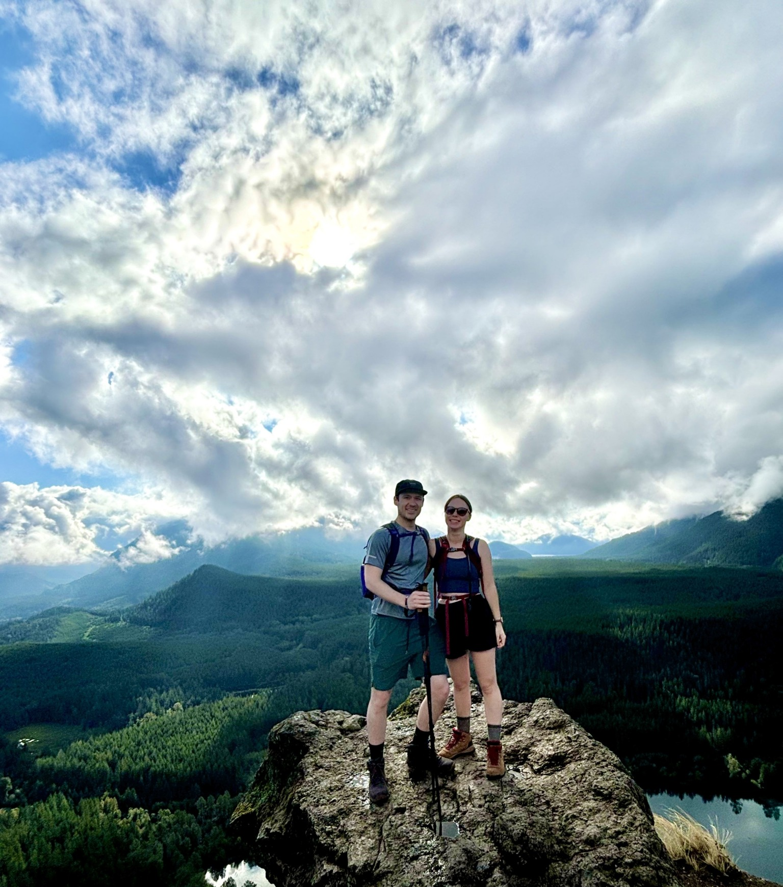

Hi! My name is,
Marshall Banks.
Take your shoes off, stay awhile.
I'm a software developer—and it feels great to finally say that! Over the past 8 years in the tech industry, I've grown from support roles to full-fledged development, honing my ability to solve complex problems with clean, efficient code. This portfolio highlights my journey and some of the exciting projects I've worked on. Let's create something amazing together. Ready to dive in? Keep scrolling or click the button below to keep the party going.
About Me
 Hi there! I'm Marshall Banks, a software developer with a passion for creating meaningful tech solutions. My journey into the tech world was a bit unconventional—I initially took on a data entry role to support my community theater hobby and ended up diving headfirst into the I.T. department with zero technical experience. Through this experience, I discovered my love for helping people, solving problems, and using code to make a difference.
Hi there! I'm Marshall Banks, a software developer with a passion for creating meaningful tech solutions. My journey into the tech world was a bit unconventional—I initially took on a data entry role to support my community theater hobby and ended up diving headfirst into the I.T. department with zero technical experience. Through this experience, I discovered my love for helping people, solving problems, and using code to make a difference.
When I'm not immersed in code, you can find me enjoying disc golf, playing video games, strumming my guitar, or relaxing with my wife as we binge-watch "The Office" (again). I also love exploring the beautiful Pacific Northwest—hiking in places like the Olympic National Forest is one of my favorite pastimes.
Currently, I'm exploring new areas of programming, from AI to app development, always with a focus on how technology can enhance our lives. And yes, I'm a big MegaMan fan—you might have spotted his helmet as my icon! Feel free to connect with me through the links below!
Here are a few technologies I’ve been working with recently:
- C#
- JS/HTML/CSS
- ASP.NET Core 8
- .NET 8
- Blazor
- Python
- SQL
- React
Where I've Worked
- DSHS
- Kittitas Valley Healthcare
- EF Recovery
Application Developer Journey @ WA STATE DSHS
Dec 2023 - Present
- Deliver high-quality, robust production code for a diverse array of projects.
- Work alongside creative directors to lead the research, development, and architecture of technical solutions.
- Collaborate with designers, project managers, and other engineers to transform creative concepts into production realities.
- Provide leadership within the engineering department through close collaboration, knowledge shares, and mentorship.
Technology Support Specialist II @ Kittitas Valley Healthcare
Jan 2019 - Oct 2022
- Troubleshot and resolved issues for Windows/Windows Server, iOS, Android, MacOS, applications, and hardware.
- Updated and maintained knowledge base for specialized medical devices and interfaces.
- Managed and deployed hospital mobile devices, ensuring secure and efficient operations.
- Supported IT infrastructure through deployment, repair, and imaging of devices and workstations.
IT Tier I Support | Implementation Coordinator @ EF Recovery
Mar 2015 - Dec 2018
- Managed SQL databases, handling tasks like record unlocking and data merging.
- Acted as a liaison between users and developers, resolving issues and improving systems during SDLC.
- Provided insights and feedback in Agile meetings, ensuring user-centric development.
- Led client onboarding, gathering feedback to inform and improve application development.
Role @ Company 4
Date - Date
- Job description 4.
- Job description 4.
- Job description 4.
- Job description 4.
Role @ Company 5
Date - Date
- Job description 5.
- Job description 5.
- Job description 5.
- Job description 5.
Projects
-
Portfolio Website
A personal portfolio website built using HTML, CSS, and JavaScript to showcase my projects and skills. It features a responsive design, with ongoing improvements to ensure full compatibility across mobile and desktop devices. This project demonstrates my front-end development skills and my ability to create clean, user-friendly layouts.
-
WGU Student Tracker App
A mobile app built with Xamarin.Forms and SQLite for tracking academic terms, courses, and assessments. Features include course and assessment management, notifications, and a detailed term overview. Developed as a capstone project for WGU’s Mobile App Development course.
-
Scheduling Desktop App
A desktop scheduling app built with C# and MySQL. It features customer and appointment management, multi-language login, timezone adjustments, and reports generation. Developed for WGU’s Software II course, this project demonstrates my ability to handle exception controls, database integration, and user activity tracking.
Some nice things people said about me
"Marshall, I just wanted to thank you again for the great work on the SEMSBrowser project. All of your code passed testing in QA and is being staged for release. Well done! Your attention to detail and thorough communication style were greatly appreciated by several folks."
- Stephen Noski (IT App Development - Supervisor)
"I’ve worked alongside Marshall for several years. Initially, he was in a different department within our company, but he showed a strong passion for IT and software development. During his time with us, Marshall's contributions grew significantly, displaying his initiative, professionalism, and strong communication skills. I highly recommend him based on his exceptional performance and adaptability."
- Rob Platt (Senior Software Engineer & Architect) (View Full Recommendation)
"I had the privilege of working with Marshall at EF Recovery, where he consistently demonstrated a deep understanding of troubleshooting both hardware and software. His passion for software development was clear, and I believe he has the potential to excel as a software engineer. His technical skills combined with excellent communication make him a valuable team member."
- Jonathan Turk (Lead Software Engineer) (View Full Recommendation)
Education
Degree:
B.S. in Software Development, Western Governors University (Graduated June 2023)
Scholarships & Honors:
Washington State Opportunity Scholar (WSOS), selected for competitive scholarship and mentorship program supporting students in high-demand STEM fields.
Certifications:
- CompTIA A+
- Project+
- ITIL Foundations
- CIW Advanced HTML5 and CSS3 Specialist
- CIW Site Development Associate